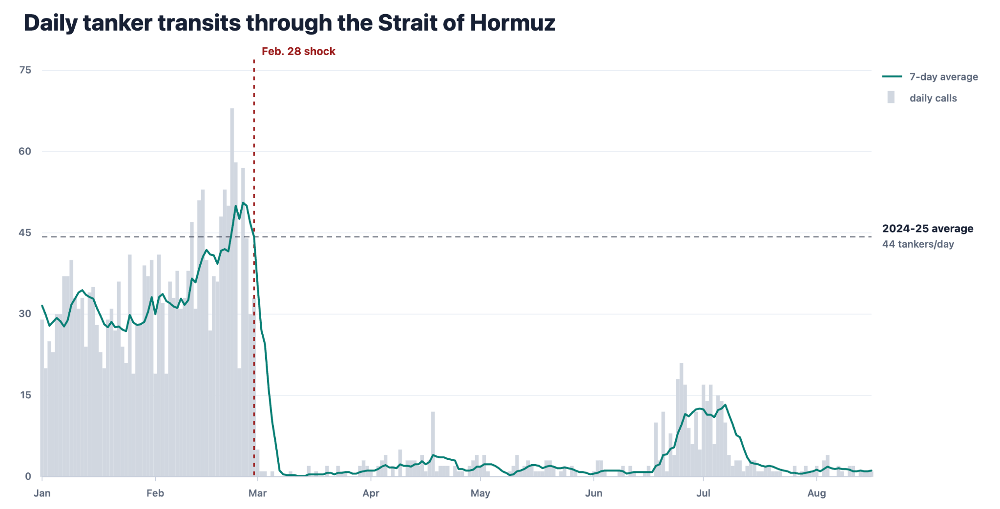
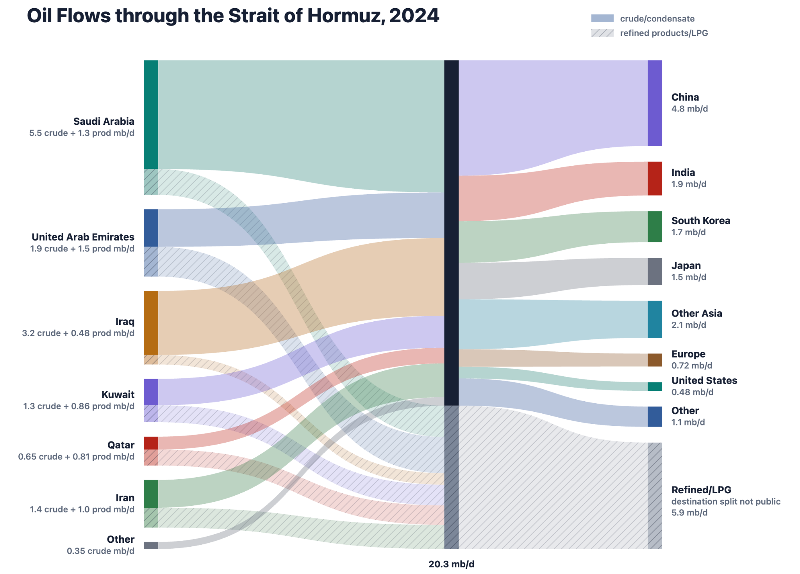
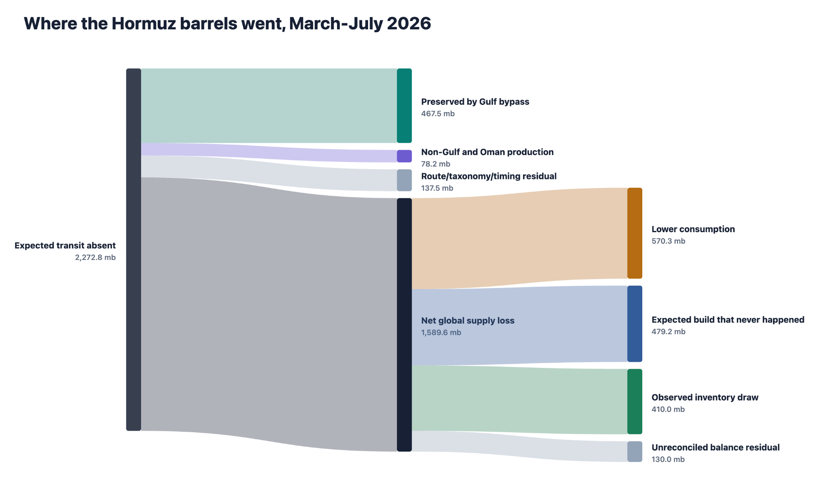
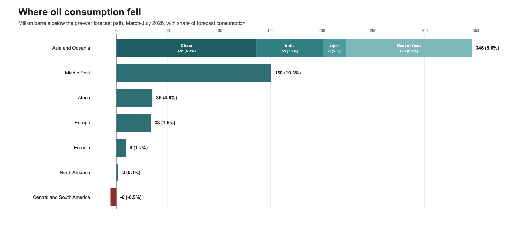

Iran’s closure of the Strait of Hormuz in response to US–Israeli aggression in February 2026 has been widely reported on. Most informed readers are likely aware that, prior to the war, around 20% of the world’s oil transited Hormuz; the abrupt cutoff of this critical route has been labeled the “largest supply disruption in the history of the global oil market” by the International Energy Agency (IEA). Despite some brief respites, particularly after the signing of the June memorandum of understanding, traffic through the Strait has never come close to prewar levels since hostilities began. At the time of writing in mid-August 2026, Iran has recently issued a list of maximalist demands for reopening the Strait that the US is unlikely to accept, meaning there is no clear end to the closure in sight. Across most of the world economy, however, business appears to be continuing as usual. How is this possible? How long can this keep going?
One difficulty in understanding this situation is that analysis by different commentators varies widely, often for ideological reasons. Actors aligned with the Trump administration consistently downplay the crisis, while Iranian media and pundits motivated by negativity bias portray it as an unmitigated catastrophe. The purpose of this post is to cut through the noise and attempt an honest accounting of the factors that have cushioned the shock to date, as well as to consider the future severity of the crisis on the basis of those factors. I focus only on oil, leaving aside liquefied natural gas and other commodities disrupted by the closure, and avoid speculating on the inherently unpredictable future of oil prices, instead analyzing the fundamentals of supply and demand. I am not an energy analyst, just a random guy who finds this stuff interesting, so feel free to reach out and correct me if any of my assumptions are inaccurate.
Setting the Scene: Daily Traffic and Baseline Oil Flow


Figure 1 shows daily tanker calls through the Strait of Hormuz, an approximate real-time reference for the amount of oil passing through. The main takeaway is that, despite some easing of the closure in June, traffic has still never approached prewar levels. Note, however, that tanker calls are far from proportional to the actual amount of oil transiting Hormuz: since the crisis began, many ships have made the crossing with their transponders off to avoid Iranian attacks, including through US Navy corridors recently reported to have carried as much as 5 mb/d. This is why, for example, tanker calls in late July were around 2% of their prewar levels, while agency estimates for oil flow were closer to one-quarter.
Figure 2 shows the baseline flow of oil through the Strait, using 2024 data because that is the latest year for which I was able to find a detailed country-level breakdown. Saudi Arabia, the UAE, and Iraq are the primary exporters, while a large majority of the exported oil is delivered to Asian countries, particularly China. Oil markets are highly globalized, so this does not mean that other regions are unaffected, particularly by elevated prices. However, as we shall see, most of the impacted consumption resulting from the Hormuz shock has taken place in Asia, as well as in the Middle East itself.
What Happened to the Missing Oil?

This is where we start getting into the weeds. The primary sources for this section are the IEA’s Oil Market Reports (OMRs) and statistics published by the US Energy Information Administration (EIA), particularly the monthly Short-Term Energy Outlook (STEO). As of the time of writing in mid-August 2026, detailed data is available only through the end of July; thus, the primary historical timeframe under consideration will be March–July unless otherwise specified.
To estimate the total amount of Hormuz oil flow disrupted during this period, we can take the prewar rate of ~20 mb/d and subtract the amount that transited the Strait despite Iran’s blockade. The IEA cites this rate as 2.7 mb/d for March–May. For June, we can approximate it by taking the total Gulf oil export rate of 17.1 mb/d and subtracting an estimated 7.2 mb/d exported from the region via alternate channels, yielding 9.9 mb/d through Hormuz; a similar calculation for July yields 7.8 mb/d. These rates are higher than previous months due to limited reopening during the negotiations of June 17 through July 14, as well as the aforementioned evacuation operations. All told, in the period under consideration, approximately 2,273 mb of expected oil flow through Hormuz did not occur.
On the supply side, there are two additional mitigating factors: bypass routes for Gulf oil and increased supply elsewhere in the world. There are three primary channels for exporting Gulf oil that avoid the Strait: Saudi Arabia’s East-West (Petroline) Pipeline, which is by far the most significant; the UAE’s Habshan–Fujairah Pipeline; and the Ceyhan Pipeline, which routes Iraqi oil through Turkey. These pipelines were already in use before the war began but have since been pushed essentially to capacity. In terms of supply shock mitigation, the important number here is the incremental flow above the baseline in March–July. While high-fidelity data for this is not available, subtracting the IEA’s estimates for prewar flow through these channels from gross flow yields about 400–550 mb incremental.1 Notably, the oil through Petroline was historically exported via the Bab el-Mandeb Strait between Yemen and the Horn of Africa. Since July 20, the Iran-backed Houthis in Yemen have begun attacking Saudi ships in the Bab el-Mandeb; while most of this oil can still be exported through the Suez Canal, this reroute more than doubles transit time to its primary consumers in East Asia.
To estimate increased supply from other sources, we inspect the difference in the EIA’s February supply forecast and the realized numbers published in August. Production did go up in some countries, with the largest movers being the US at 84 mb and Brazil at 45 mb, but this was partly offset by a decrease of 39 mb in Russia due to refinery damage inflicted by Ukraine. The global net change is about 78 mb, essentially a rounding error compared to the total disruption. Subtracting this and the incremental bypass flow from the Hormuz loss above gives us a net supply loss of around 1,650–1,800 mb for March–July. A similar number is obtained by simply comparing the difference between February’s predicted and August’s reported global supply; while this includes unrelated factors, a large majority is due to Hormuz, and the net shortfall comes out to 1,590 mb.
This is a lot of oil to go missing. There are essentially three mechanisms by which the market can absorb this shock: by releasing oil stocks, either from nations’ strategic petroleum reserves (SPRs) or privately-held inventory; by canceling planned buildup of the same stocks; or by reducing demand. We consider each of these in turn.
The OMRs provide monthly estimates of the increase or decrease in global oil stocks. Using the most recent public IEA estimates for each month, the total net draw was 410 mb. This includes 111 mb from the US SPR and 48 mb from US commercial reserves, for both of which the EIA supplies detailed time-series data, with the remaining 251 mb split among the rest of the world in a way that cannot be resolved from public data. As of August 7, the US SPR stands at 299 mb, its lowest level since 1983.
In addition to countries and corporations drawing down existing stocks, foregone build is another, often-overlooked way in which the shock was cushioned. 2026 was supposed to be an oil glut year: in February, the EIA made monthly predictions for March–July between 2.4 and 3.9 mb/d in global stock build, for a total of 479 mb. This never materialized and instead stored oil was drawn down. While this category does not represent real barrels of oil that ever existed, it is an important way in which some pain was averted, as much of the missing oil was intended to pad stocks rather than for immediate use.
The final category is demand reduction, the only one of these categories that results in short-term economic pain. While oil can be replaced by other energy sources in some cases, most often this lowered consumption results in a decrease in human wellbeing and economic output. In the section on “Impacts by Country/Region” below, we will discuss what this looks like on the ground in various places. For the present accounting, meanwhile, we again compare the EIA’s February forecast with reported totals from August, which suggest a total of 570 mb in reduced demand over the period in question.
Importantly, demand reduction does not always impact consumers directly. Inventory statistics only include “primary” bulk-layer reserves held in refineries, terminals, pipelines, and so forth; data on “tertiary” reserves held at gas stations, power stations, and other industrial and commercial sites is not tracked. If any of this tertiary stock is used, it would count as demand reduction rather than inventory draw, although structurally it has the characteristics of the latter: less immediately painful, but also less sustainable.
Summing these three categories still leaves an unexplained residual of approximately 130 mb missing from the total shortfall. While large in absolute terms, at 0.85 mb/d this is well within the range of typical inter-agency disagreement and is thus an unsurprising result for our accounting, which mixes EIA and IEA sources.
The Price of Oil
This post centers the impacts of the Hormuz shock on supply and demand, because those are the factors that directly influence welfare. In general, prices lie downstream of these dynamics, representing an ongoing referendum on the severity of the crisis and the capacity of buffers like stock draw and demand reduction to absorb its effects. This is not to say that prices are unimportant: in particular, it is impossible to accurately tabulate how much of the demand drop is due to physical shortages or top-down policy, as opposed to decreased purchasing due to consumer price sensitivity.
There are many sources that provide oil price time-series, such as the St. Louis Fed. In general, we can make two observations about the trajectory since February 28. First, the market has been in a state of “backwardation” throughout, meaning that the spot price of oil exceeds the futures price. Consequently, it would be unprofitable to speculatively hoard oil and so this is unlikely to be a factor exacerbating the crisis. Second, after peaking on April 7 at over 100% higher than prewar levels, as of the time of writing the Brent spot price is closer to 30% elevated, indicating a relatively optimistic attitude. This is only possible because of the large observed drop in demand: the apparently reassuring price path and the less reassuring demand reduction figures are two sides of the same story.
Impacts by Country/Region

Middle East / Gulf states
| Country | Shut-in oil in mb, March–July (% of country total) |
|---|---|
| Iraq | 393.0 (58%) |
| Saudi Arabia | 370.7 (23%) |
| Kuwait | 195.8 (50%) |
| UAE | 133.4 (24%) |
| Qatar | 64.9 (76%) |
| Iran | 30.6 (6%) |
| Bahrain | 19.6 (66%) |
The region containing Hormuz itself was hit hard on both the supply and demand sides. Table 1 shows shut-in oil supply by country: note that the shut-in percentage is much lower for countries like Saudi Arabia and the UAE with robust Hormuz bypass routes, though the Houthi embargo on Saudi oil through the Bab el-Mandeb may complicate this moving forward. In March–July, aggregate Middle East demand reduction was 150 mb, about 11% of prewar regional demand. Much of this is due to outages of domestic energy infrastructure, grounded aviation, and collapses in tourism and trade.
Energy exports comprise a large portion of these countries’ economies. In the increasingly likely scenario that Hormuz remains closed through the end of 2026, lost production of oil and other energy commodities alone would cut Iraq’s GDP by 22%, Qatar’s by 21%, Kuwait’s by 18%, and Saudi Arabia’s by 5%.2 This is before accounting for impacts to other sectors such as tourism, which cratered in the Gulf region this year due to security concerns. These numbers are large — the US’s peak-to-trough GDP decline from the Great Depression was 27% — but in practice result primarily in lost government revenue rather than mass unemployment, and can be cushioned in countries like Kuwait and Qatar by their ample sovereign wealth funds. Iraq is the country in which this reduction is most likely to incur a substantial human cost, as there is no meaningful sovereign wealth buffer and roughly 4 million people are employed by the state. In other Gulf countries with large migrant labor populations, migrant jobs are more likely to be cut than domestic ones, exporting the economic pain from the Middle East back to countries like India, Pakistan, and Bangladesh.
China
China experienced by far the largest reduction in demand of any single country, at 136 mb over March–July. It is worth noting two popular accounts of China’s role in cushioning the crisis that do not stand up to scrutiny: rapid transition to renewables and large-scale SPR draw. For the former, prior to the shock, only 0.1% of China’s electricity needs were supplied by petroleum, with the majority coming from coal; any offset must then come from electrification of products like vehicles, rail, and cooking, which occurs far too slowly to comprise a significant chunk of the 136 mb. For the latter, we can calculate the implied change in China’s crude stocks, which include commercial stocks as well as the national SPR, directly from Chinese customs data. Over the period in question, this yields 1,362 mb in imports plus 671 mb in domestic production minus 2,003 mb in refinery throughput, for a net increase of 30 mb, per China’s National Bureau of Statistics monthly energy releases. While it is likely that some of the demand drop was from drawdown of the “tertiary stocks” described above, and some analysts have speculated without evidence that China is drawing from hidden underground reserves, the available data does not point to a coordinated primary stock draw.
Two mechanisms that China did use to cushion the shock were export and price controls. China’s exports of refined products decreased by roughly 5.24 million tonnes in March–July versus the same period in 2025, equivalent to approximately 40 mb depending on conversion,3 allowing these products to be available for domestic consumption instead of being sent abroad. Meanwhile, China’s National Development and Reform Commission (NDRC) capped retail fuel prices, resulting in a peak gasoline price increase of only around 21% from the prewar baseline, versus 58% in the US. There was some reduction in fuel consumption: both gasoline and diesel demand were up about 2% year-on-year in the three months before the war, before dropping to –10% YoY in May. In total, about 44 mb less diesel and 14 mb less gasoline were consumed relative to this prewar baseline in March–June (July statistics are unavailable), with the remaining demand reduction likely from industrial and petrochemical sources.
In general, China’s command economy allowed it to offload economic pain first onto foreign customers and then onto less visible sectors of the economy. While households did opt to buy somewhat less gas, they were shielded by these mechanisms from the brunt of the pain; in contrast to many other countries, meanwhile, China’s vast oil reserves have actually grown since the war began.
Other Asian countries
In India, the most visible effect of the Hormuz shock was a widespread shortage of liquefied petroleum gas (LPG), used for cooking. While this acute crisis ended in June through a combination of rationing and subsidies, consumption of naphtha (used for plastic and paint) remained down 42% year-on-year and bitumen (typically used for road-building) down 18%, according to India’s Petroleum Planning and Analysis Cell.
In Japan, which relied on the Middle East for about 95% of its oil, the shock was cushioned through China-style subsidies, as well as large-scale SPR draw. Japan’s national stockpile fell 28% between February and June, with a total release of 72 mb of oil. Sales of gasoline were down only 2.6% year-on-year in April, much less than naphtha at 35.6%, meaning that industrial consumers are once again more impacted than households.
Other, poorer countries have been hit even harder, though the impacts are difficult to quantify. Bangladesh in particular has experienced ongoing fuel shortages and load shedding since the war began. The IEA cites a variety of fuel-saving policies adopted by countries, including a three-day in-person school week in Laos and a four-day work week for government officials in Pakistan. Unfortunately, the countries experiencing the worst economic consequences are generally those for which the least comprehensive data is available.
United States
While gas prices remain elevated by about 41% versus the prewar baseline, demand for oil across sectors has barely shifted from February forecasts, illustrating the US economy’s remarkable lack of price sensitivity. As of August 7, the US SPR has been drawn down from 416 to 299 mb since the war began, representing 28% of the prewar total; commercial stocks, however, remain at 1,237 mb (including all petroleum products, not just crude) and have actually grown since July. Oil represents only about 1% of US electricity production, so power costs have barely risen. According to a rule of thumb from the Fed, a 10% increase in oil prices yields a 0.15pp rise in headline inflation, so a rise of 30% should contribute less than half a percentage point — not ideal with inflation already above the 2% target since 2021, but not catastrophic. In short, despite having instigated the war in the first place, the US has remained largely shielded from its effects.
What Will Happen if the Closure Persists?
Now that we understand the ways in which the world has reacted to cushion the Hormuz shock, we can turn our attention to the future. It is of course impossible to set a single “doomsday date” at which pressure from the closure tanks the world economy, but we can at least inspect each factor in turn and ask how sustainable it is.
Stock draw
According to our rough accounting under “What Happened to the Missing Oil?” above, in the March–July period stock draw accounted for 28% of the explained gap. The US SPR is the most frequently-cited variable here, and the numbers do look scary. With a 28% drawdown since the war began, the SPR would reach physical zero at some point in fall 2027, though operational and policy constraints mean the actual floor is likely far sooner. Fortunately, the US SPR is only one part of world oil reserves. In the US itself, commercial reserves are far more ample, though their dynamics are almost entirely market-driven: there is no mechanism for the US government to coordinate commercial stock release. Meanwhile, the New York Times, citing Kpler, put total crude inventory outside the US, China, and the Gulf at around 1,400 mb pre-war; if our estimate of 251 mb for “rest-of-world” draw is accurate, this is a roughly 18% reduction, high but proportionately lower than the US’s contribution.
If the closure continues, the rate of stock draw will likely decrease, as countries need to maintain enough stored oil to be prepared for future crises, shifting the impact to the demand reduction column. The wild card is China, which has actually padded its reserves since February. While the majority of Chinese stock is also “commercial,” this designation is somewhat different than in the US: about two-thirds of Chinese oil is processed by state-owned companies, whose oil is tabulated as commercial stocks, while the remainder can still be effectively directed by the government under China’s command economy structure. In a prolonged closure situation, will China step in to bail out the world economy? It’s hard to say: China has a strong interest in maintaining the status quo of global trade, but it may be unwilling to soften the landing for the US in a war that China opposes. In any case, China has positioned itself to have tremendous and ever-increasing leverage as the closure goes on.
Foregone build
This category accounted for 33% of the explained gap. It is the slipperiest of the three categories, representing oil that was projected for stock build but never actually existed. Despite its “virtual” nature, this was absolutely a real factor in mitigating the shock: if the expectation had already been that 2026 demand would exceed supply, the results would have been much messier. Moreover, it will continue easing the blow through at least 2026: the previously-cited 479 mb in expected build for March–July is augmented by a projected 456 mb for the following five-month period of August–December, plus 978 mb in 2027. Trying to project forward the impact of foregone build indefinitely is impossible and highlights a general limitation of our “expected-versus-actual” analysis: the farther we project out, the lower-fidelity our original prediction was, until eventually there is no solid forecast that we can honestly anchor against.
Demand reduction
Demand reduction comprised the remaining 39% of the gap in the period under study. As discussed previously, it is hard to break this down precisely between physical shortages versus decreased consumption due to price sensitivity, or between end-consumer demand for products like fuel versus commercial and industrial demand resulting in less visible productivity decline.
Moving forward, it is likely that acute shortages like India’s LPG crisis will be less common as countries adapt to a closed Strait as the new status quo. The world has already had to adjust demand down for five months, so if the reduced demand stays flat, we can expect things to continue more or less as they are now. However, if the amount of shut-in oil remains constant as countermeasures like stock draw slow, greater cuts will be necessary. Likewise, an unspecified fraction of demand reduction to-date actually represents draw from untraceable tertiary stocks; if these have been largely tapped, as seems likely, the share of demand reduction falling on more painful sectors of the economy will increase. The largest burden will continue falling on poor countries, though if the Strait is closed for long enough to allow new supply chains to be established, it may concentrate less on historical Hormuz consumers in Asia and spread to Africa or elsewhere. In any case, in the absence of a major price spike, I see no evidence that developed countries will be facing severe supply issues anytime soon.
Economic intervention
In addition to the factors above, economic intervention through measures like subsidies, price caps, and export controls has been an important factor in mitigating the shock. These do not change the underlying barrel calculations, but they shuffle economic harm either to less immediately painful sectors of the economy or to other countries. Some of these measures are more durable than others: heavy stimulus meant to address an acute crisis may stretch government budgets, while export controls and similar top-down restrictions could potentially continue indefinitely, at the cost of a relatively small GDP share.
On the other hand, there are some potentially mitigative policies that are still untried. The US is the world’s largest oil producer and has not placed any export controls on its commercial inventory, a policy choice that favors continued oil profits over retaining domestic supply. This possibility seems remote in the present free-market environment, but it has precedent: strict export controls were placed on US oil in response to the 1973 Arab oil embargo and remained in force for 40 years. In general, the story here is the same as elsewhere: nations with more resources have greater flexibility to enact measures that reduce their own exposure to the shock, while poorer nations are forced to play with the hand they are dealt.
What will happen when the Strait opens?
When the Strait finally opens, oil will not immediately begin flowing at prewar rates. This is partly because shut-in infrastructure takes time to come back online and partly because of long transit times: it takes three weeks for a tanker to get from the Gulf to East Asia. Nonetheless, the EIA estimates that supply will exceed demand again as early as one month after reopening; while the agency’s predictions for when the Strait reopens have been consistently overoptimistic, I see no reason not to trust them on the post-opening timeline.
How Writing This Changed My Perspective
I am strongly opposed to the Iran War, which I view as a senseless waste of human life and resources. As such, in the early days of the war, it was easy for me to buy into the narrative that the Hormuz closure would cause swift and decisive economic damage to the US. As months passed and this clearly wasn’t happening, I became curious why, and this curiosity led to this post. In researching this, it has become clear that the US economy can likely weather this for the foreseeable future; that the most severe impacts have been concentrated in the Global South; and that China has effectively capitalized on this conflict by padding its reserves as the US’s run down, as well as positioning itself as the world leader in renewables at a shaky time for oil. The ball is in the US’s court to accede to Iran’s reopening conditions: my read is now that the factors pushing the US to a settlement have less to do with impending economic collapse and more with domestic political pressure and awareness of a weakening American position with respect to its primary rival, China. I never thought Trump, who hates losing, would cave quickly; after this analysis, I am forced to conclude that, in the absence of external factors forcing his hand, he will likely hold out for even longer than I’d thought.
Use of AI
I used AI to parse data, generate figures, and understand oil-market concepts. All writing is my own.
Endnotes
- Three non-Hormuz routes are reconstructed monthly: Petroline, Habshan–Fujairah, and Ceyhan. Each is set to an observed or reported rate: Petroline exports rising from about 2 mb/d prewar to 5 mb/d, Habshan–Fujairah to its 1.8 mb/d capability, Ceyhan to the 250 kb/d reported from March 18. Gross bypass reaches 7.2 mb/d from April onward, against a 3.8 mb/d prewar baseline for the same routes. The modeled value of 468 mb appears in Figure 3; the 400–550 mb range reflects uncertainty but is not a statistical interval. ↩
- For each country, the annual-average 2026 crude output loss is calculated from monthly shut-ins, holding July rates through December, then multiplied by that country’s hydrocarbon share of real value added from its own national accounts. Qatar’s available national-accounts shares combine oil and gas while the shut-in series is crude only, so the derived number is a mixed-sector proxy. Sources: Iraq, Qatar, Kuwait, Saudi Arabia. ↩
- Customs report export volumes in tonnes; the barrel figure depends on the product mix, because gasoline, diesel, jet and fuel oil have different densities (roughly 8.5, 7.5, 8.0 and 6.7 barrels per tonne). The 5.24 Mt March–July shortfall converts to about 41 mb using month-by-month JODI product-mix factors. ↩